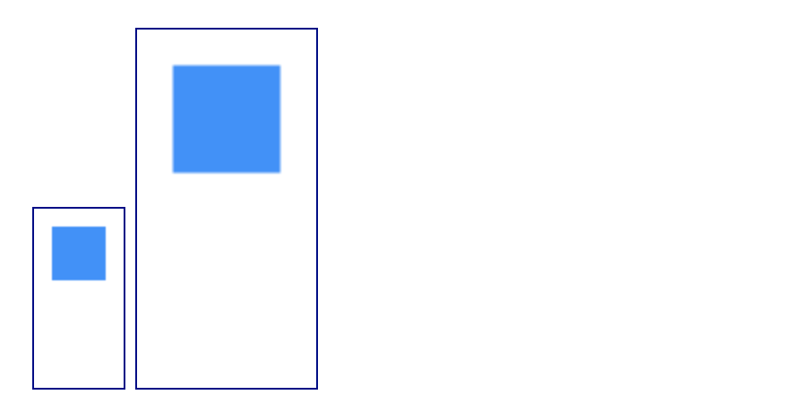
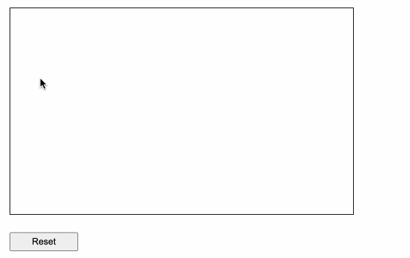
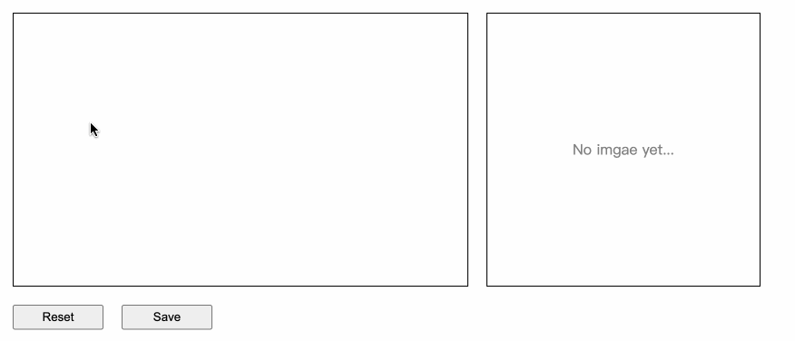

一直都沒機會用到的 Canvas。
相關 methods
通用：
fillRect 畫出實心矩形strokeRect 畫空心矩形clearRect 清除畫面
通常會搭配一起使用的：
beginPath 開啟新的繪圖路徑moveTo 初始位置lineTo 結束位置stroke 畫出線條軌跡closePath 關閉繪圖路徑
地雷：同樣是 width / height，但 HTML 和 CSS 的意義不同
在使用 Canvas 時可能會想要設定畫布的寬跟高，所以可能會很直覺的用 CSS 來設定，不過這樣的寫法跟直接寫在 HTML 屬性上的意義不一樣，直接來看個範例：
1
2
3
4
5
6
7
8
9
10
11
12
| <canvas id="canvas1" width="50" height="100"></canvas>
<canvas id="canvas2" width="50" height="100" style="width: 100px"></canvas>
<script>
ctx1 = canvas1.getContext('2d')
ctx2 = canvas2.getContext('2d')
ctx1.fillStyle = 'dodgerblue'
ctx2.fillStyle = 'dodgerblue'
ctx1.fillRect(10, 10, 30, 30)
ctx2.fillRect(10, 10, 30, 30)
</script>
|
注意這兩個 canvas 的內容幾乎一樣，只在差 canvas2 多在 CSS 中設定了 width: 100px，最後出來的結果如下：

附註：Codepen
看到差異了嗎？canvas2 的藍色方塊直接被放大了一倍。這是因為 HTML 的寬高是用來設定 Canvas 內部的座標和網格系統，而 CSS 則是用來設定實際呈現在畫布上的實際大小。
以上面的例子來說的話，可以想成是 canvas2 在 Canvas 內部的原本大小是 50 x 100，但因為我們用 CSS 設定了 width: 100px，意思就是最後呈現的畫面必須從原本的 50 x 100 變成 100 x 50，也就是 2 倍（100 / 50），所以最後看到的畫面才會看起來放大了兩倍。
而 canvas1 因為沒有設定 CSS，所以預設會自動以 1:1 的方式去呈現畫布中的內容。
基本繪製功能
這邊只解釋大概思路，實作的部分就直接看程式碼吧：
- 建立一個 flag 來表示目前是否在繪圖，藉此來開關路徑的繪製
- 在畫布中「點擊」時，開啟繪圖狀態（更新 flag）
- 「移動」游標時，取得座標位置並繪製路徑（只有在繪圖狀態時才執行）
- 在對應的時機點結束繪製，一個是游標「離開」畫布時，一個是「鬆開」按鍵時
在電腦上必須監聽底下事件：
onMouseDownonMouseMoveonMouseUponMouseLeave
在手機上必須監聽底下事件：
onTouchStartonTouchMoveonTouchCancelonTouchEnd
1
2
3
4
5
6
7
8
9
10
11
12
13
14
15
16
17
18
19
20
21
22
23
24
25
26
27
28
29
30
31
32
33
34
35
36
37
38
39
40
41
42
43
44
45
46
47
48
49
50
51
52
53
54
55
56
57
58
59
60
61
62
63
64
65
66
67
68
69
70
71
72
73
74
75
76
77
78
79
80
| function App() {
const canvas1 = useRef<HTMLCanvasElement>(null)
const isPanting = useRef<boolean>(false)
useEffect(() => {
const ctx1 = canvas1.current!.getContext('2d')!
ctx1.lineWidth = 4
ctx1.lineCap = 'round'
return () => {
ctx1.clearRect(0, 0, canvas.current!.width, canvas.current!.width)
}
}, [])
function getStartCoord(event: React.TouchEvent | React.MouseEvent) {
const cavasSize = canvas1.current?.getBoundingClientRect()!
const position = {
x: 0,
y: 0
}
if (event.type === 'mousemove') {
position.x = (event as React.MouseEvent).clientX - cavasSize.left
position.y = (event as React.MouseEvent).clientY - cavasSize.top
} else {
position.x = (event as React.TouchEvent).changedTouches[0].clientX - cavasSize.left
position.y = (event as React.TouchEvent).changedTouches[0].clientY - cavasSize.top
}
return position
}
function onStart() {
isPanting.current = true
}
function onDrawing(event: React.TouchEvent | React.MouseEvent) {
if (isPanting.current) {
const coord = getStartCoord(event)
const ctx1 = canvas1.current!.getContext('2d')!
ctx1.lineTo(coord.x, coord.y)
ctx1.stroke()
}
}
function onFinish() {
const ctx1 = canvas1.current!.getContext('2d')!
ctx1.beginPath()
isPanting.current = false
}
return (
<div className='App'>
<canvas
ref={canvas1}
id='canvas'
width='500'
height='300'
onMouseMove={onDrawing}
onMouseDown={onStart}
onMouseUp={onFinish}
onMouseLeave={onFinish}
onTouchStart={onStart}
onTouchMove={onDrawing}
onTouchCancel={onFinish}
onTouchEnd={onFinish}
></canvas>
</div>
)
}
|

附註：Codepen
產生圖片
Canvas 元素上有一個 toDataURL 的 method，可以用來把目前畫布上的內容轉換成「base64」的格式。如果你對 base64 不陌生的話，應該就會知道它其實可以當作 <img> 的 src 值，這樣就可以顯示圖片了！
直接來看範例：
1
2
3
4
5
6
7
8
9
10
11
12
13
14
15
16
17
18
19
20
21
22
23
24
25
26
27
28
29
30
31
32
33
34
35
36
37
38
39
40
41
42
43
44
45
46
47
48
49
50
| function App() {
const canvas = useRef<HTMLCanvasElement>(null)
const [imgSrc, setImgSrc] = useState<string>('')
const isPanting = useRef<boolean>(false)
function onClear() {
const ctx = canvas.current!.getContext('2d')!
ctx.clearRect(0, 0, canvas.current!.width, canvas.current!.width)
setImgSrc('')
}
function onSave() {
const base64 = canvas.current!.toDataURL('image/png')
setImgSrc(base64)
}
return (
<div className='App'>
<div className='wrapper'>
<canvas
ref={canvas}
id='canvas'
width='500'
height='300'
onMouseMove={onDrawing}
onMouseDown={onStart}
onMouseUp={onFinish}
onMouseLeave={onFinish}
onTouchStart={onStart}
onTouchMove={onDrawing}
onTouchCancel={onFinish}
onTouchEnd={onFinish}
></canvas>
<div className='img-wrapper'>
{/* 有 src 時才顯示圖片 */}
{imgSrc !== '' ? <img src={imgSrc} /> : <p>No imgae yet...</p>}
</div>
</div>
<div className='btns'>
<button onClick={onClear}>Reset</button>
<button onClick={onSave}>Save</button>
</div>
</div>
)
}
|
附註：Codepen
